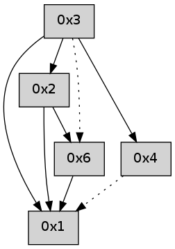

>> << IDX [start] -100 -25 -5 +0 +5 +25 +100 [400.233566999]
 Previous packets
----------------------------------------------------------------------
395.312481 beacon01(adaf) #0 coord=01,02,05,03,04,06 cycle=432.0ms assoc
-- color-indic=0 64 10 54
395.322442 beacon02(adaf) #0 coord=01,02,05,03,04,06 cycle=432.0ms assoc 64 41 ab
395.332444 beacon05(adaf) #0 coord=01,02,05,03,04,06 cycle=432.0ms assoc 64 e7 81
395.342443 beacon03(adaf) #0 coord=01,02,05,03,04,06 cycle=432.0ms assoc 64 7b a5
395.352444 beacon04(adaf) #0 coord=01,02,05,03,04,06 cycle=432.0ms assoc 64 dd 8f
395.362444 beacon06(adaf) #0 coord=01,02,05,03,04,06 cycle=432.0ms assoc 64 a9 93
----------------------------------------------------------------------
395.804591 beacon01(adaf) #0 coord=01,02,05,03,04,06 cycle=432.0ms assoc
-- color-indic=0 64 c8 10
395.814553 beacon02(adaf) #0 coord=01,02,05,03,04,06 cycle=432.0ms assoc 64 99 ef
395.824552 beacon05(adaf) #0 coord=01,02,05,03,04,06 cycle=432.0ms assoc 64 3f c5
395.834553 beacon03(adaf) #0 coord=01,02,05,03,04,06 cycle=432.0ms assoc 64 a3 e1
395.844553 beacon04(adaf) #0 coord=01,02,05,03,04,06 cycle=432.0ms assoc 64 05 cb
395.854553 beacon06(adaf) #0 coord=01,02,05,03,04,06 cycle=432.0ms assoc 64 71 d7
395.865955 [Hello(1): seq=92 sym=2 sysInfo= stat=2:2,0,0,0]
----------------------------------------------------------------------
396.296699 beacon01(adaf) #0 coord=01,02,05,03,04,06 cycle=432.0ms assoc
-- color-indic=0 64 0c 7f
396.306660 beacon02(adaf) #0 coord=01,02,05,03,04,06 cycle=432.0ms assoc 64 5d 80
396.316660 beacon05(adaf) #0 coord=01,02,05,03,04,06 cycle=432.0ms assoc 64 fb aa
396.326661 beacon03(adaf) #0 coord=01,02,05,03,04,06 cycle=432.0ms assoc 64 67 8e
396.336661 beacon04(adaf) #0 coord=01,02,05,03,04,06 cycle=432.0ms assoc 64 c1 a4
396.346660 beacon06(adaf) #0 coord=01,02,05,03,04,06 cycle=432.0ms assoc 64 b5 b8
----------------------------------------------------------------------
396.788807 beacon01(adaf) #0 coord=01,02,05,03,04,06 cycle=432.0ms assoc
-- color-indic=0 64 40 cf
396.798768 beacon02(adaf) #0 coord=01,02,05,03,04,06 cycle=432.0ms assoc 64 11 30
396.808769 beacon05(adaf) #0 coord=01,02,05,03,04,06 cycle=432.0ms assoc 64 b7 1a
396.818768 beacon03(adaf) #0 coord=01,02,05,03,04,06 cycle=432.0ms assoc 64 2b 3e
396.828768 beacon04(adaf) #0 coord=01,02,05,03,04,06 cycle=432.0ms assoc 64 8d 14
396.838769 beacon06(adaf) #0 coord=01,02,05,03,04,06 cycle=432.0ms assoc 64 f9 08
396.850165 [Hello(1): seq=93 sym=2 sysInfo= stat=2:2,0,0,0]
----------------------------------------------------------------------
397.280917 beacon01(adaf) #0 coord=01,02,05,03,04,06 cycle=432.0ms assoc
-- color-indic=0 64 84 a0
397.290879 beacon02(adaf) #0 coord=01,02,05,03,04,06 cycle=432.0ms assoc 64 d5 5f
397.300878 beacon05(adaf) #0 coord=01,02,05,03,04,06 cycle=432.0ms assoc 64 73 75
397.310879 beacon03(adaf) #0 coord=01,02,05,03,04,06 cycle=432.0ms assoc 64 ef 51
397.320879 beacon04(adaf) #0 coord=01,02,05,03,04,06 cycle=432.0ms assoc 64 49 7b
397.330879 beacon06(adaf) #0 coord=01,02,05,03,04,06 cycle=432.0ms assoc 64 3d 67
----------------------------------------------------------------------
397.773026 beacon01(adaf) #0 coord=01,02,05,03,04,06 cycle=432.0ms assoc
-- color-indic=0 64 c9 a7
397.782987 beacon02(adaf) #0 coord=01,02,05,03,04,06 cycle=432.0ms assoc 64 98 58
397.792987 beacon05(adaf) #0 coord=01,02,05,03,04,06 cycle=432.0ms assoc 64 3e 72
397.802988 beacon03(adaf) #0 coord=01,02,05,03,04,06 cycle=432.0ms assoc 64 a2 56
397.812988 beacon04(adaf) #0 coord=01,02,05,03,04,06 cycle=432.0ms assoc 64 04 7c
397.822988 beacon06(adaf) #0 coord=01,02,05,03,04,06 cycle=432.0ms assoc 64 70 60
397.839001 [Hello(1): seq=94 sym=2 sysInfo= stat=2:2,0,0,0]
----------------------------------------------------------------------
398.265133 beacon01(adaf) #0 coord=01,02,05,03,04,06 cycle=432.0ms assoc
-- color-indic=0 64 0d c8
398.275096 beacon02(adaf) #0 coord=01,02,05,03,04,06 cycle=432.0ms assoc 64 5c 37
398.285095 beacon05(adaf) #0 coord=01,02,05,03,04,06 cycle=432.0ms assoc 64 fa 1d
398.295096 beacon03(adaf) #0 coord=01,02,05,03,04,06 cycle=432.0ms assoc 64 66 39
398.305094 beacon04(adaf) #0 coord=01,02,05,03,04,06 cycle=432.0ms assoc 64 c0 13
398.315095 beacon06(adaf) #0 coord=01,02,05,03,04,06 cycle=432.0ms assoc 64 b4 0f
----------------------------------------------------------------------
398.757241 beacon01(adaf) #0 coord=01,02,05,03,04,06 cycle=432.0ms assoc
-- color-indic=0 64 41 78
398.767202 beacon02(adaf) #0 coord=01,02,05,03,04,06 cycle=432.0ms assoc 64 10 87
398.777202 beacon05(adaf) #0 coord=01,02,05,03,04,06 cycle=432.0ms assoc 64 b6 ad
398.787202 beacon03(adaf) #0 coord=01,02,05,03,04,06 cycle=432.0ms assoc 64 2a 89
398.797203 beacon04(adaf) #0 coord=01,02,05,03,04,06 cycle=432.0ms assoc 64 8c a3
398.807203 beacon06(adaf) #0 coord=01,02,05,03,04,06 cycle=432.0ms assoc 64 f8 bf
398.824944 [Hello(1): seq=95 sym=2 sysInfo= stat=2:2,0,0,0]
----------------------------------------------------------------------
399.249350 beacon01(adaf) #0 coord=01,02,05,03,04,06 cycle=432.0ms assoc
-- color-indic=0 64 85 17
399.259311 beacon02(adaf) #0 coord=01,02,05,03,04,06 cycle=432.0ms assoc 64 d4 e8
399.269311 beacon05(adaf) #0 coord=01,02,05,03,04,06 cycle=432.0ms assoc 64 72 c2
399.279312 beacon03(adaf) #0 coord=01,02,05,03,04,06 cycle=432.0ms assoc 64 ee e6
399.289312 beacon04(adaf) #0 coord=01,02,05,03,04,06 cycle=432.0ms assoc 64 48 cc
399.299313 beacon06(adaf) #0 coord=01,02,05,03,04,06 cycle=432.0ms assoc 64 3c d0
----------------------------------------------------------------------
399.741458 beacon01(adaf) #0 coord=01,02,05,03,04,06 cycle=432.0ms assoc
-- color-indic=0 64 db 76
399.751419 beacon02(adaf) #0 coord=01,02,05,03,04,06 cycle=432.0ms assoc 64 8a 89
399.761419 beacon05(adaf) #0 coord=01,02,05,03,04,06 cycle=432.0ms assoc 64 2c a3
399.771419 beacon03(adaf) #0 coord=01,02,05,03,04,06 cycle=432.0ms assoc 64 b0 87
399.781420 beacon04(adaf) #0 coord=01,02,05,03,04,06 cycle=432.0ms assoc 64 16 ad
399.791420 beacon06(adaf) #0 coord=01,02,05,03,04,06 cycle=432.0ms assoc 64 62 b1
399.802799 [Hello(1): seq=96 sysInfo= stat=]